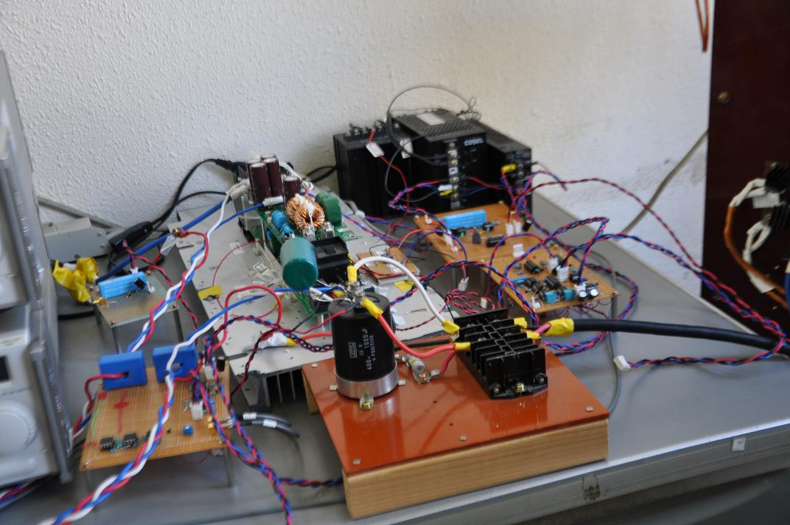

DC-DC Converter for Photovoltaic Generation System
|  | |
High Efficiency Control Method for Grid-Connected Inverter of Photovoltaic Generation System
Recently, photovoltaic generation systems as clean energy have attracted attention as measures for mitigating global warming issues. In the photovoltaic generation system, the grid-connected system inverter by a semiconductor power converter is used, and the most consists of the circuit which combined the DC-DC converter and the inverter. However, there has a problem of decrease of power conversion efficiency. In our laboratory, we studies the control method of maintain high-efficiency for input voltage variation and load variation at the insulated DC-DC converter for the photovoltaic generation system.